← 返回批次首页 · 返回总览
T6 CoT 人工证据复核（全量，81 例） · 第 1/4 页
批准不是总开关。Compare-only、冲突和多病灶病例必须逐 finding 选择支持帧；
compare.best 不作为证据。缺部位或 panel 不足必须从现有可读帧补足，无图时选择“需要补候选帧”。
Reviewer
已完成 0/25
复核结果（可直接复制）· 校验通过 0 条 / 全批 81 例
L7_2ad65aad_forrest · forrest · IIB · blind 与 compare 证据冲突仅 compare 路径找到候选证据多个病灶尚未绑定到同一目标需医生确认报告等级
exam SCOPEV2_52d02ad65aad · 类别 多病灶/Paris 病灶绑定 ·
panel 范围 1–4 · snapshot 23b9c181feb3
0. 报告 impression 原文（核对锚点等级的依据）
复合型溃疡（十二指肠处Forrest IIb）建议住院治疗
正则命中片段：Forrest IIb 锚点等级：IIB
2. Grounding 逐 finding 裁决
GRD_5bd73ae6d6917bab · 胃窦 · 溃疡
报告片段：小弯侧近幽门可见一处溃疡，直径约0.5cm，中央薄苔附着，活检见渗血，高糖喷洒止血，周边黏膜充血水肿，可见散在点片状糜烂。
状态 blind_supported_match · candidate digest f15deb3557546dc0 · compare.best 已明确忽略
Blind：所有图像均显示胃窦黏膜存在炎症性改变，但未见明确溃疡、息肉、隆起或钛夹等结构。
Compare：图像1最清晰展示溃疡主体及周边改变；图像2显示喷洒后气泡及弥漫性改变；图像3为侧壁视角，充血水肿仍可见但病灶主体不显。
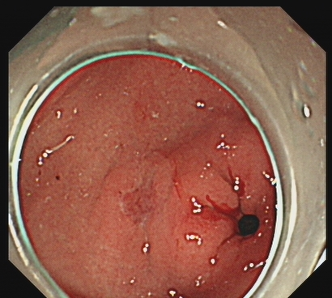
RF_381eb6b23051b60a
胃窦 · 模态未知 · 0.5236

RF_de9b9242d054a95d
胃窦 · white_light · 0.9084

RF_0aa19084f9616951
胃窦 · white_light · 0.9581
GRD_c3a0dded5fbdba3c · 十二指肠 · 溃疡
报告片段：前壁小弯侧可见一处黑褐色血痂附着，冲洗后见一约0.6*0.8cm深凹溃疡，覆白苔，周围充血水肿，另可见多处霜斑样溃疡。
状态 conflict_review · candidate digest 11292f0f9a215e08 · compare.best 已明确忽略
Blind：仅依据图像可见异常，未进行跨图推断。
Compare：图像1和4最清晰展示主要溃疡病灶及其特征；图像5最能体现多发的霜斑样溃疡。其他图像主要显示正常或非特异性黏膜，未见明确病灶。
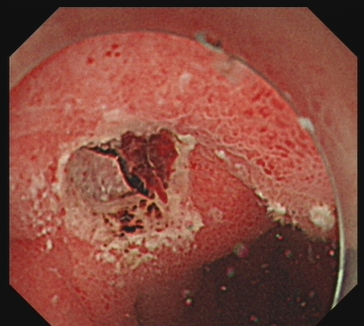
RF_08255016f898c27f
十二指肠 · white_light · 0.9895
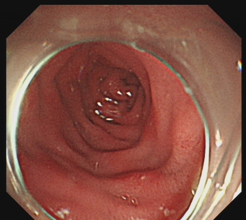
RF_373744a842bfe192
十二指肠 · 模态未知 · 0.9711
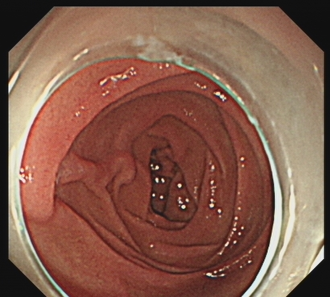
RF_016c365459113e92
十二指肠 · white_light · 0.9997

RF_c90529ac2db2c531
十二指肠 · 模态未知 · 0.9411
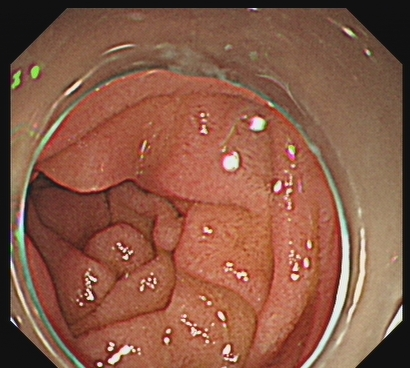
RF_bc2aabc06a9c1dd7
十二指肠 · 模态未知 · 0.9152
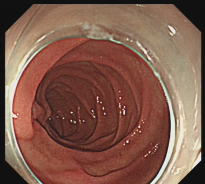
RF_1a92ad5ae7b01d9b
十二指肠 · white_light · 0.9997
4. 最终 panel
批准时必须满足族级范围，医生证据帧与部位帧会自动勾入。
5. 备注
L7_928d7813_forrest · forrest · IIA · 仅 compare 路径找到候选证据多个病灶尚未绑定到同一目标需医生确认报告等级
exam SCOPEV2_2817928d7813 · 类别 多病灶/Paris 病灶绑定 ·
panel 范围 1–4 · snapshot 8e9192d96f77
0. 报告 impression 原文（核对锚点等级的依据）
胃体溃疡（Forrest IIa） 注射+荷包缝合止血术
复合性溃疡(A1期) 性质待病理
胃黏膜贫血貌改变
正则命中片段：Forrest IIa 锚点等级：IIA
2. Grounding 逐 finding 裁决
GRD_5f1235a8a446ba6c · 胃体 · 溃疡
报告片段：黏膜水肿粗糙，以白为主，RAC消失，下部前壁近大弯见一处不规则溃疡，大小约1.2cm，表覆黄苔，周边黏膜水肿，皱襞中段，活检，上部后壁近大弯见一处大小约2cm深凹溃疡，中央见白色血栓头及黑色血痂覆盖，周边黏膜水肿明显，肾上腺素1ml+浓钠9ml分3点注射，溃疡创面予金属夹联合尼龙绳荷包缝合。
状态 blind_supported_match · candidate digest 907f581824245554 · compare.best 已明确忽略
Blind：所有图像均来自胃体部位，部分为NBI模式，可清晰观察黏膜微结构。
Compare：图像2、6、7为NBI模式，更清晰显示血管及金属夹；图像5显示注射后出血，为治疗过程中的动态表现。
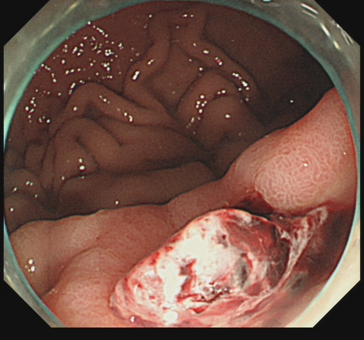
RF_49094d0e1a97f5d8
胃体 · 模态未知 · 0.9209

RF_ef4330c90ce79723
胃体 · 模态未知 · 0.9566

RF_3a7cc5378117e572
胃体 · white_light · 0.9787
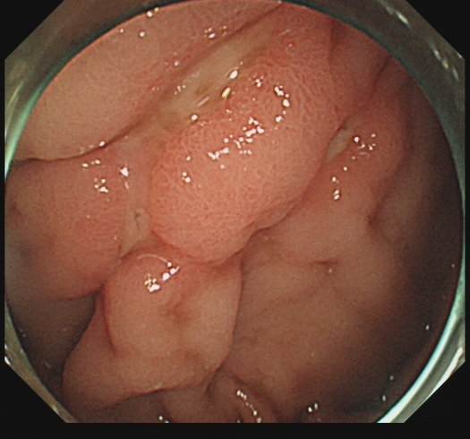
RF_213b6f93cc8ad005
胃体 · white_light · 0.9184

RF_7b018d7b91617bb0
胃体 · 模态未知 · 0.8901

RF_21e84c006319c262
胃体 · 模态未知 · 0.9966
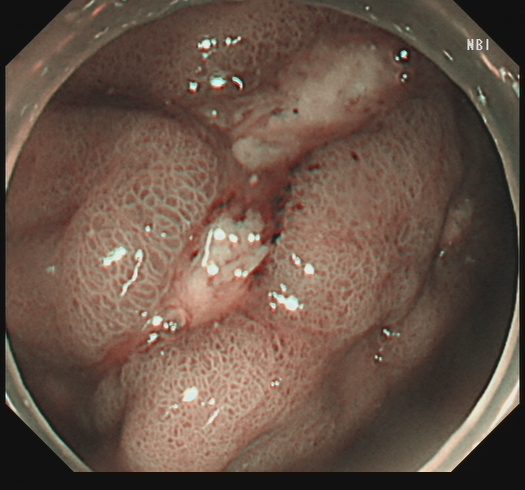
RF_724652778d4cb241
胃体 · 模态未知 · 0.9986

RF_4ca73450941c1592
胃体 · white_light · 0.9888
GRD_d60ad233cb92d02c · 胃角 · 溃疡
报告片段：中段见多发大小约0.3-0.6cm溃疡，表覆黄苔，周边黏膜水肿。
状态 compare_only_candidate · candidate digest f1ff3bf275a4e8a8 · compare.best 已明确忽略
Blind：三张图像均未见明确的溃疡、息肉、糜烂、充血、水肿、隆起、瘢痕或钛夹等异常所见。
Compare：图像2因气泡和反光遮挡，对溃疡及黄苔的判读受限，但黏膜水肿的弥漫性改变仍可辨。

RF_d48067b6abbd18f1
胃角 · 模态未知 · 0.5438

RF_bdda16610e48e405
胃角 · 模态未知 · 0.6829

RF_193b1bcca789e575
胃角 · white_light · 0.9991
GRD_3876d8ea1f639ade · 十二指肠 · 溃疡
报告片段：形态正常，前壁大弯见一处环形溃疡，大小约1.5cm，表覆黄苔，小弯见一大小约0.6cm溃疡，表覆黄苔，周边黏膜充血水肿。十二指肠降部通畅，未见异常。
状态 blind_supported_match · candidate digest 508523fa05ffc003 · compare.best 已明确忽略
Blind：所有图像均显示十二指肠黏膜，部分图像可见充血和糜烂，其余图像未见明确异常。
Compare：图像2最清晰地展示了前壁大弯的溃疡及周边充血；图像4清晰显示了小弯溃疡；图像7和8展示了通畅的降部。
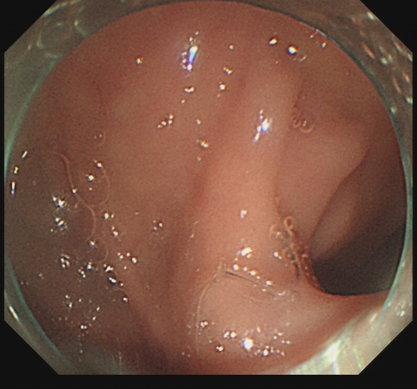
RF_585eb71e5c051b3d
十二指肠 · 模态未知 · 0.8996

RF_b47e453c17c36206
十二指肠 · 模态未知 · 0.9595
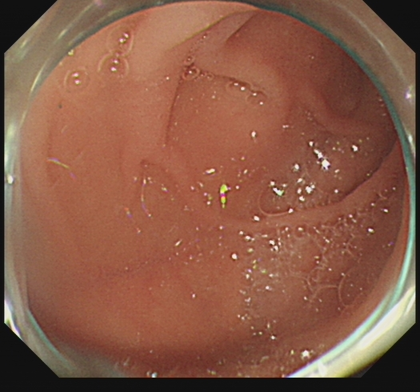
RF_7e8579e7913eee3c
十二指肠 · white_light · 0.9845
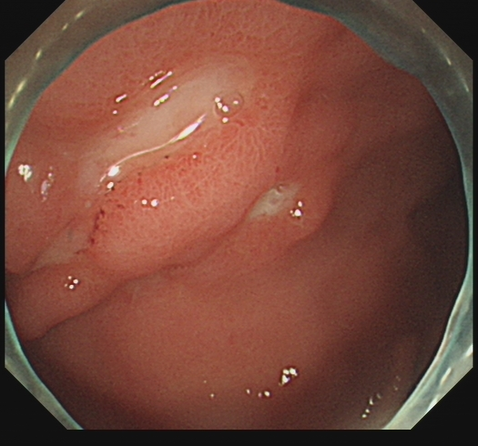
RF_dc0d990b579b310c
十二指肠 · 模态未知 · 0.9293
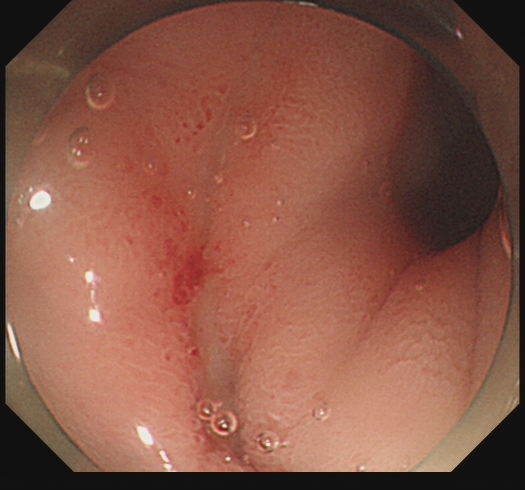
RF_c76dbc65acb81522
十二指肠 · 模态未知 · 0.9843

RF_83db674e029a4a41
十二指肠 · 模态未知 · 0.939
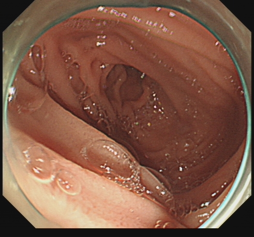
RF_f5b4a06d108835ea
十二指肠 · white_light · 0.9967

RF_659bdde62cd7f87a
十二指肠 · white_light · 0.9953
4. 最终 panel
批准时必须满足族级范围，医生证据帧与部位帧会自动勾入。
5. 备注
L7_bd0496c0_forrest · forrest · IIB · 仅 compare 路径找到候选证据没有 blind 支持帧多个病灶尚未绑定到同一目标需医生确认报告等级
exam SCOPEV2_3b87bd0496c0 · 类别 多病灶/Paris 病灶绑定 ·
panel 范围 1–4 · snapshot 93f0605ce553
0. 报告 impression 原文（核对锚点等级的依据）
十二指肠球部溃疡 Forrest IIb
慢性非萎缩性胃炎伴糜烂
正则命中片段：Forrest IIb 锚点等级：IIB
2. Grounding 逐 finding 裁决
GRD_8f95e9dc2ce6769b · 胃窦 · 糜烂
报告片段：黏膜粗糙，色泽红白相间，见出血斑，散在片状充血糜烂，活检。
状态 blind_supported_match · candidate digest 3b817374b3fe3ceb · compare.best 已明确忽略
Blind：所有图像均显示胃窦黏膜存在充血和点状或线状糜烂，未见溃疡、息肉、隆起、瘢痕或钛夹等其他明确异常。
Compare：所有描述性所见在全部6张图像中均有体现，但根据清晰度、病灶暴露程度和构图完整性进行排序。出血斑在图像1、3、6中最为清晰可辨。
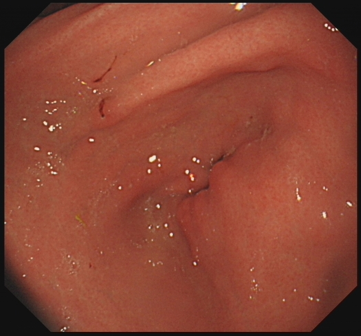
RF_240855b60b8b76f0
胃窦 · 模态未知 · 0.8311
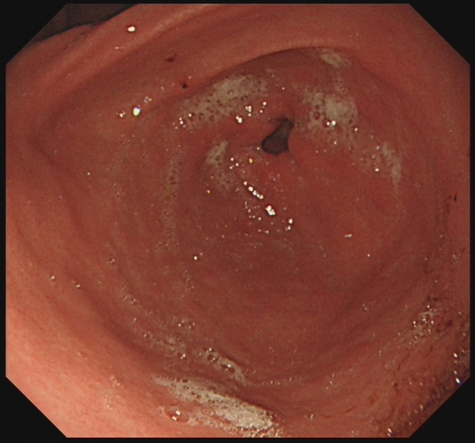
RF_36710a4a022f4cdf
胃窦 · white_light · 0.9997
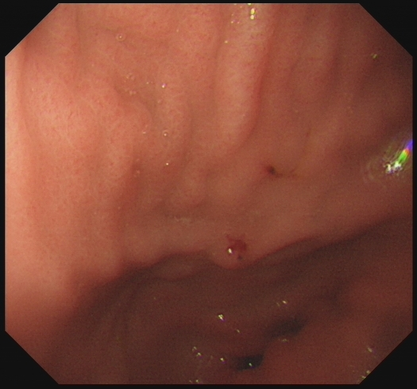
RF_8a813b942b7f2e35
胃窦 · 模态未知 · 0.9968
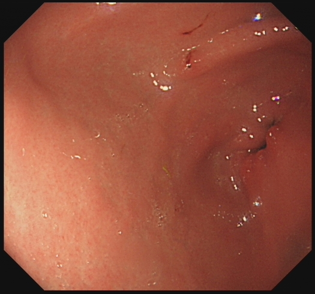
RF_b44ba9917e589138
胃窦 · 模态未知 · 0.9995
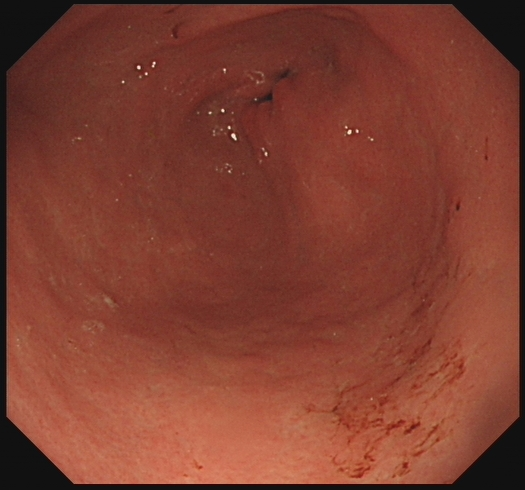
RF_24f8b94871e1c74c
胃窦 · white_light · 0.9998
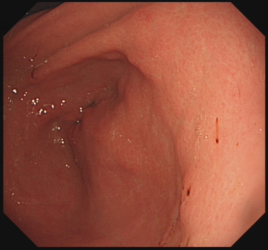
RF_ee07e02f17e573fc
胃窦 · white_light · 0.9996
Finding 4：散在片状充血糜烂 聚合状态 blind_supported_match；blind RF_240855b60b8b76f0, RF_36710a4a022f4cdf, RF_8a813b942b7f2e35, RF_b44ba9917e589138, RF_24f8b94871e1c74c, RF_ee07e02f17e573fc；compare RF_240855b60b8b76f0, RF_b44ba9917e589138, RF_ee07e02f17e573fc, RF_36710a4a022f4cdf, RF_24f8b94871e1c74c, RF_8a813b942b7f2e35支持证据帧：
GRD_85b28723fb08892d · 十二指肠 · 溃疡
报告片段：黏膜充血，前壁见直径约0.6cm溃疡，表面覆黑色血痂，周围黏膜水肿，球腔变形。十二指肠降部通畅，未见异常。
状态 blind_supported_match · candidate digest 64d2b9af9f0ea0fa · compare.best 已明确忽略
Blind：所有图像均显示十二指肠黏膜的炎症性改变，未见明确溃疡、息肉、隆起或钛夹等局灶性病变。
Compare：降部通畅未见异常为阴性描述，图像中未展示该部位，故不选图。
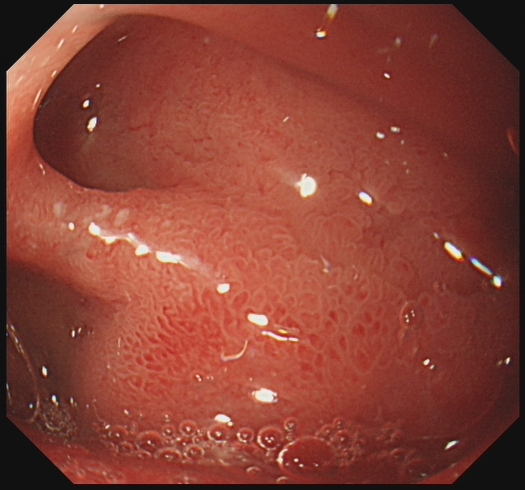
RF_37707b3c0da7c453
十二指肠 · 模态未知 · 0.526
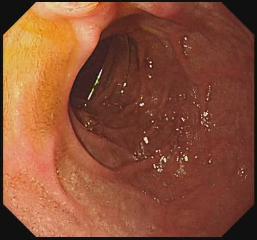
RF_26c0ec0cdb4cd40b
十二指肠 · white_light · 1.0
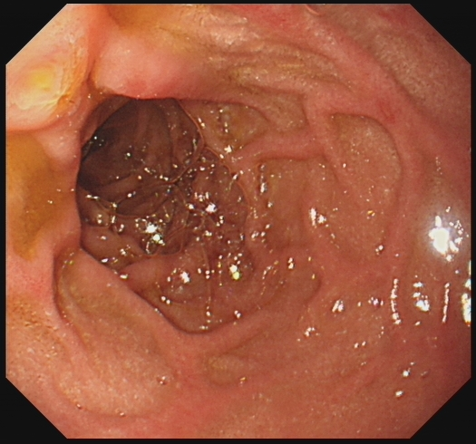
RF_4671aac31969ef06
十二指肠 · white_light · 0.9999
4. 最终 panel
批准时必须满足族级范围，医生证据帧与部位帧会自动勾入。
5. 备注
L7_176b63be_paris · paris_mesdag · IIB · 仅 compare 路径找到候选证据Paris 病灶类别竞争需医生确认报告等级
exam SCOPEV2_c14b176b63be · 类别 多病灶/Paris 病灶绑定 ·
panel 范围 3–8 · snapshot d32b6fb8a181
0. 报告 impression 原文（核对锚点等级的依据）
复合性多发性溃疡A2
胃窦0-IIb样病变
胃窦0-IIc样病变
正则命中片段：0-IIb 锚点等级：IIB
2. Grounding 逐 finding 裁决
GRD_122ae3313f930014 · 胃窦 · 溃疡
报告片段：黏膜充血水肿，色泽红白相间，黏膜红白相间，局限白相为主，小弯侧黏膜片状发红，M-NBI示腺管尚规则，近前壁黏膜片状稍凹陷，M-NBI示腺管欠规则，分别活检，大弯侧及小弯侧各见溃疡，约0.6×0.8cm，分别活检。
状态 blind_supported_match · candidate digest e8324de9679e39b5 · compare.best 已明确忽略
Blind：所有图像均显示胃窦黏膜充血及皱襞增粗，未见明确溃疡、息肉或隆起性病变。
Compare：M-NBI相关描述（腺管规则性）无法从白光图像中判读，故未列入。
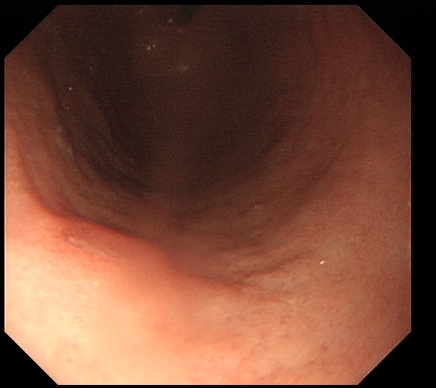
RF_295851223412ac7e
胃窦 · white_light · 0.9979
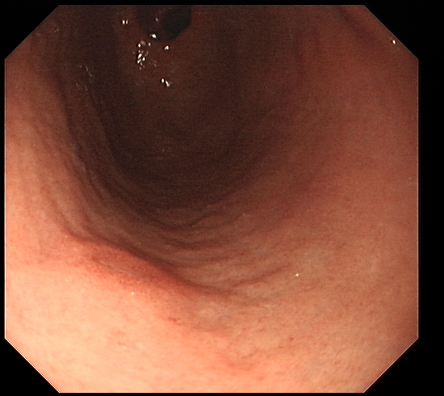
RF_ea936574c6ffb83f
胃窦 · white_light · 0.9989
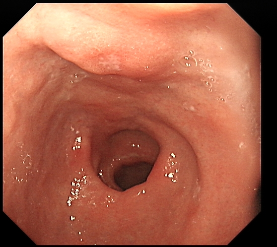
RF_ee880a8714f5fbc4
胃窦 · 模态未知 · 0.7835
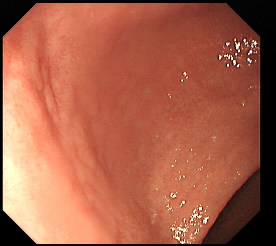
RF_999d8a37709ad7ce
胃窦 · white_light · 0.9994
4. 最终 panel
批准时必须满足族级范围，医生证据帧与部位帧会自动勾入。
5. 备注
L7_9ab7433b_paris · paris_mesdag · IIC · 仅 compare 路径找到候选证据没有 blind 支持帧Paris 病灶类别竞争需医生确认报告等级
exam SCOPEV2_31699ab7433b · 类别 多病灶/Paris 病灶绑定 ·
panel 范围 3–8 · snapshot d3b26bc123d6
0. 报告 impression 原文（核对锚点等级的依据）
胃多发息肉
胃体0-IIc样病变
胃窦0-IIa样病变
正则命中片段：0-IIc 锚点等级：IIC
2. Grounding 逐 finding 裁决
GRD_f3b7bfd083a76e19 · 胃底 · 息肉
报告片段：黏膜多发扁平息肉样隆起，色白，部分钳除 。
状态 compare_only_candidate · candidate digest 38d858a459657e41 · compare.best 已明确忽略
Blind：所有图像均显示胃底黏膜存在不同程度的炎症表现，如点状出血、黏膜粗糙及皱襞增粗。
Compare：图像2和5中可见内镜器械（钳子或活检钳），提示正在进行或已完成钳除操作。图像1最清晰展示白色扁平隆起。
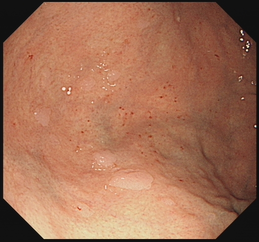
RF_99bdaddc1a182131
胃底 · 模态未知 · 0.9997
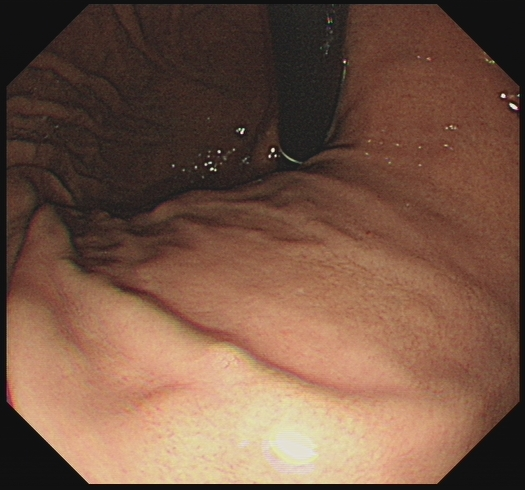
RF_f79e8b80a4f9a8af
胃底 · 模态未知 · 0.7649
RF_ca13db63a7c1a30b
胃底 · white_light · 1.0
RF_4f14b795258f8bde
胃底 · white_light · 1.0
RF_16e75e1629440229
胃底 · white_light · 1.0
GRD_e09e5dff1127ee5e · 胃体 · 息肉
报告片段：黏膜光整，多发绿豆大小色白息肉，部分钳除，蠕动正常，大弯侧黏膜片状凹陷，部分表面发白，活检。
状态 compare_only_candidate · candidate digest 90f5ae46d1f01ff6 · compare.best 已明确忽略
Blind：所有描述仅基于图像可见特征，未参考任何外部报告。
Compare：‘蠕动正常’和‘活检’为动态或操作性描述，静态图像无法直接体现。‘多发绿豆大小色白息肉’在图像中表现为散在小白色斑点，因图像分辨率限制，大小判断为中等置信度。‘部分钳除’及‘片状凹陷’、‘表面发白’在图像1、3、5、7中可见红色创面及周围黏膜改变，图像1最清晰。
RF_ba3477f93edbef04
胃体 · 模态未知 · 0.9992
RF_fd86ea41e64226a5
胃体 · white_light · 1.0
RF_ee13a90032bda751
胃体 · 模态未知 · 1.0
RF_c8045a33f07fb1d6
胃体 · white_light · 1.0
RF_0efe24ed81aeba62
胃体 · 模态未知 · 0.9999
RF_d74442a7f25e5232
胃体 · white_light · 1.0
RF_6e0778fbe234805b
胃体 · 模态未知 · 1.0
RF_5554e05aa4b859b0
胃体 · 模态未知 · 0.9996
GRD_ad782e6b671c82c1 · 胃窦 · 隆起
报告片段：黏膜充血水肿，色泽红白相间，黏膜红白相间，局限白相为主，后壁黏膜片状隆起，表面糜烂。
状态 compare_only_candidate · candidate digest 5fa062d24cb71b3b · compare.best 已明确忽略
Blind：所有图像均显示胃窦黏膜，未见明确的溃疡、息肉、糜烂、充血、水肿、隆起、瘢痕或钛夹等异常所见。
Compare：所有描述的病变在六张图像中均可见，因均为弥漫性或范围性改变，故统一标记为uniform=true。图像1构图最完整、对焦最清晰，故作为best。
RF_44449a39c9224f35
胃窦 · white_light · 0.9983
RF_ef7c2a99c8d8ae31
胃窦 · white_light · 0.9969
RF_f7a50803d5ffc852
胃窦 · 模态未知 · 0.972
RF_22fe5db8bf571cd1
胃窦 · white_light · 0.9998
RF_20426eb67699b094
胃窦 · 模态未知 · 0.928
RF_3702dd2a05c813e4
胃窦 · 模态未知 · 0.8705
GRD_6746a8f296f598b5 · 十二指肠 · 溃疡
报告片段：绿豆大小息肉样隆起，钳除，未见溃疡及新生物。十二指肠降部通畅，未见异常。
状态 blind_supported_match · candidate digest 5470fe82a6a1027c · compare.best 已明确忽略
Blind：所有描述均基于单张图像独立判断，未进行跨图推断。
Compare：图像2为十二指肠降部通畅的典型视图，无病灶且管腔开放；图像6清晰显示钳除操作；图像1、5、3均可见息肉样隆起，其中1最清晰；图像4显示钳除后出血点，属操作后改变，非原发新生物或溃疡。
RF_ddfc23abfebb2df7
十二指肠 · white_light · 1.0
RF_655b705c99a00ada
十二指肠 · white_light · 0.9994
RF_e981e473cfb618f3
十二指肠 · 模态未知 · 0.9988
RF_27317afa8a5c7da7
十二指肠 · 模态未知 · 0.9971
RF_bd8fac1c8dafd6fb
十二指肠 · white_light · 1.0
RF_f2127749e07c7e75
十二指肠 · 模态未知 · 0.5164
4. 最终 panel
批准时必须满足族级范围，医生证据帧与部位帧会自动勾入。
5. 备注
L7_17ae34c7_ulcer_ahs · ulcer_ahs · A1 · 仅 compare 路径找到候选证据没有 blind 支持帧多个病灶尚未绑定到同一目标
exam SCOPEV2_097b17ae34c7 · 类别 多病灶/Paris 病灶绑定 ·
panel 范围 2–6 · snapshot 999e743e929e
0. 报告 impression 原文（核对锚点等级的依据）
反流性食管炎A级
慢性非萎缩性胃炎
复合性溃疡（A1）
正则命中片段：溃疡（A1 锚点等级：A1
2. Grounding 逐 finding 裁决
GRD_d8663ae9e08d41c6 · 胃体 · 溃疡
报告片段：黏膜光整，色泽红白相间，未见溃疡及出血，蠕动正常。
状态 compare_only_candidate · candidate digest 8d200463552653c7 · compare.best 已明确忽略
Blind：所有图像均显示胃体黏膜存在充血、水肿及皱襞增粗，部分图像有器械或反光伪影干扰。
Compare：蠕动正常是动态功能描述，静态图像无法直接体现，故未选图。
RF_36c9184d10282b4a
胃体 · white_light · 1.0
RF_b809436328f35d01
胃体 · white_light · 0.9999
RF_907419e4148ec39f
胃体 · 模态未知 · 0.995
RF_b3226190665382d4
胃体 · white_light · 1.0
RF_11ca685146f27e93
胃体 · 模态未知 · 0.9923
RF_31cd5290475aae29
胃体 · 模态未知 · 0.9701
RF_604ca57a3ef4f918
胃体 · 模态未知 · 0.9996
RF_ba9d32163c97a50b
胃体 · 模态未知 · 0.9982
GRD_aefe3ac0d5a9b2a8 · 胃角 · 溃疡
报告片段：拱形存在，水肿，充血，中央见两处溃疡，0.4cm，表面覆白苔，无活动性性出血
状态 blind_supported_match · candidate digest b70dc0e6cd49c2a4 · compare.best 已明确忽略
Blind：所有图像均显示胃角黏膜呈弥漫性充血、水肿及表面粗糙，未见明确溃疡、息肉、隆起、瘢痕或钛夹。
Compare：所有图像均未显示活动性出血，故该项为均匀存在。溃疡在图像4中最为清晰，可见器械指向病灶，白苔明显。
RF_d7de98e90e6f5505
胃角 · 模态未知 · 0.9993
RF_be2f2d5c4978275b
胃角 · white_light · 0.9999
RF_ee297c40b28643a7
胃角 · 模态未知 · 0.8643
RF_7debe609e0448e96
胃角 · white_light · 1.0
RF_c7d875f2b67d53a1
胃角 · 模态未知 · 0.8477
RF_8324d93d04a52228
胃角 · white_light · 0.9998
Finding 2：水肿 聚合状态 blind_supported_match；blind RF_d7de98e90e6f5505, RF_be2f2d5c4978275b, RF_ee297c40b28643a7, RF_7debe609e0448e96, RF_c7d875f2b67d53a1, RF_8324d93d04a52228；compare RF_d7de98e90e6f5505, RF_be2f2d5c4978275b, RF_c7d875f2b67d53a1, RF_8324d93d04a52228, RF_ee297c40b28643a7, RF_7debe609e0448e96支持证据帧：
Finding 3：充血 聚合状态 blind_supported_match；blind RF_d7de98e90e6f5505, RF_be2f2d5c4978275b, RF_ee297c40b28643a7, RF_7debe609e0448e96, RF_c7d875f2b67d53a1, RF_8324d93d04a52228；compare RF_d7de98e90e6f5505, RF_be2f2d5c4978275b, RF_c7d875f2b67d53a1, RF_8324d93d04a52228, RF_ee297c40b28643a7, RF_7debe609e0448e96支持证据帧：
GRD_ae930f234b9e2b28 · 胃窦 · 溃疡
报告片段：黏膜色泽红白相间，以红为主，水肿明显，前壁见两处溃疡，0.5cm，表面覆白苔，周边黏膜充血水肿，胃窦变形，活检。
状态 blind_supported_match · candidate digest 76a93b1e3e4b49af · compare.best 已明确忽略
Blind：所有图像均显示胃窦黏膜呈弥漫性充血、水肿，未见明确溃疡、息肉或出血点。
Compare：图像2因存在明显伪影（彩色光斑），对黏膜细节判读有干扰，故在多数项目中排在图像1之后。图像3构图偏斜，对胃窦整体形态判断稍逊于图像1。
RF_fe97b663cd22a7ca
胃窦 · white_light · 0.9246
RF_c7cd092c38447406
胃窦 · white_light · 0.9161
RF_47e48308a9629b4f
胃窦 · white_light · 0.9929
GRD_0306354e9ee9cc25 · 十二指肠 · 溃疡
报告片段：前壁近幽门见0.8cm溃疡，表面覆白苔，周边黏膜充血水肿。十二指肠降部通畅，未见异常。
状态 blind_supported_match · candidate digest 0475c9508be4dedf · compare.best 已明确忽略
Blind：所有图像均显示十二指肠黏膜弥漫性充血、水肿及皱襞增粗，未见明确溃疡、息肉、糜烂、隆起、瘢痕或钛夹等局灶性病变。
Compare：溃疡及周边改变主要集中在图像1、2、8；降部通畅及无异常主要在3、4、6、7中体现。
RF_1c17e33853751ccc
十二指肠 · 模态未知 · 0.9825
RF_936d8ebd032e08c4
十二指肠 · white_light · 0.9879
RF_3e3d5d0fef08f564
十二指肠 · 模态未知 · 0.8911
RF_f9de720c59c36608
十二指肠 · 模态未知 · 0.9442
RF_b45f31764194bc59
十二指肠 · white_light · 0.9996
RF_020104fe95bf7b0b
十二指肠 · 模态未知 · 0.9582
RF_2177daa463a6cb62
十二指肠 · white_light · 0.9999
RF_ea8863d964e756cf
十二指肠 · 模态未知 · 0.9869
Finding 3：周边黏膜充血水肿 聚合状态 blind_supported_match；blind RF_1c17e33853751ccc, RF_936d8ebd032e08c4, RF_3e3d5d0fef08f564, RF_f9de720c59c36608, RF_b45f31764194bc59, RF_020104fe95bf7b0b, RF_2177daa463a6cb62, RF_ea8863d964e756cf；compare RF_1c17e33853751ccc, RF_936d8ebd032e08c4, RF_b45f31764194bc59, RF_ea8863d964e756cf支持证据帧：
4. 最终 panel
批准时必须满足族级范围，医生证据帧与部位帧会自动勾入。
5. 备注
L7_1bb918ac_ulcer_ahs · ulcer_ahs · A1 · 仅 compare 路径找到候选证据多个病灶尚未绑定到同一目标
exam SCOPEV2_ebe71bb918ac · 类别 多病灶/Paris 病灶绑定 ·
panel 范围 2–6 · snapshot 7e58163cc073
0. 报告 impression 原文（核对锚点等级的依据）
反流性食管炎A级
慢性萎缩性胃炎（C-2），伴HP感染考虑
胃多发溃疡（A1）
十二指肠球部多发溃疡（A1）
正则命中片段：溃疡（A1 锚点等级：A1
2. Grounding 逐 finding 裁决
GRD_8a5c8f3e80595d47 · 胃角 · 溃疡
报告片段：拱形存在，黏膜粗糙，灰白色，中部见一处约0.4cm溃疡灶，表覆黄白苔，周边黏膜水肿，活检。
状态 blind_supported_match · candidate digest 3e357fb3ba47538c · compare.best 已明确忽略
Blind：所有图像均显示胃角部位黏膜异常，以充血、隆起、糜烂及点状出血为主要表现。
Compare：图像1和4为NBI模式，黏膜呈灰白色，粗糙纹理清晰；图像2和3为白光模式，更易观察溃疡及黄白苔。所有图像均能观察到胃角拱形结构。
RF_2fbfe413b1e1186b
胃角 · 模态未知 · 0.9985
RF_0121ab669c9f7d02
胃角 · white_light · 1.0
RF_2ca7c0bd67a95126
胃角 · white_light · 0.9999
RF_c6f0505c9cfac0d9
胃角 · 模态未知 · 0.9545
GRD_65b9ef2ee4747d9f · 胃窦 · 溃疡
报告片段：黏膜充血水肿，色泽白相为主，见陈旧出血斑；小弯侧见多发小溃疡，活检。
状态 blind_supported_match · candidate digest 214968252dca524e · compare.best 已明确忽略
Blind：所有图像均显示胃窦黏膜存在不同程度的充血和粗糙，部分图像可见糜烂或局部隆起。未见明确溃疡、息肉、瘢痕或钛夹。
Compare：图像3最清晰展示弥漫性充血水肿；图像1最典型显示白相黏膜、陈旧出血斑及小溃疡。
RF_a2060e72d8000cea
胃窦 · white_light · 0.9972
RF_9188e8b4d8ee9624
胃窦 · 模态未知 · 0.9878
RF_38639091cee0eab6
胃窦 · 模态未知 · 0.9016
RF_4ac901322aa389c5
胃窦 · white_light · 0.9899
RF_fcb9fde26094f10b
胃窦 · white_light · 0.9975
RF_abbef1ad68bd4014
胃窦 · 模态未知 · 0.592
Finding 1：黏膜充血水肿 聚合状态 blind_supported_match；blind RF_a2060e72d8000cea, RF_9188e8b4d8ee9624, RF_38639091cee0eab6, RF_4ac901322aa389c5, RF_fcb9fde26094f10b, RF_abbef1ad68bd4014；compare RF_38639091cee0eab6, RF_a2060e72d8000cea, RF_fcb9fde26094f10b, RF_9188e8b4d8ee9624, RF_4ac901322aa389c5, RF_abbef1ad68bd4014支持证据帧：
GRD_c20996771ae92c5a · 十二指肠 · 溃疡
报告片段：形态正常，球部见2处约0.5cm溃疡，表覆黄白苔。十二指肠降部通畅，未见异常。
状态 blind_supported_match · candidate digest 2514be920a1f50da · compare.best 已明确忽略
Blind：所有图像均为内镜下所见，部分图像显示黏膜破损及周围充血，符合糜烂或溃疡表现；部分图像显示正常黏膜结构。
Compare：图像1、2、5、8清晰显示球部溃疡及黄白苔；图像4、6、7显示降部通畅且无异常，构图完整，为弥漫性正常所见。
RF_d3cf4e0a926ca461
十二指肠 · 模态未知 · 0.9981
RF_c6bb2b7d1671189d
十二指肠 · 模态未知 · 0.9994
RF_d8fca418260f3028
十二指肠 · 模态未知 · 0.996
RF_67906a1a4cd029d5
十二指肠 · white_light · 0.9996
RF_89bc45f8824e5e00
十二指肠 · white_light · 0.9997
RF_0228fc5a73db50c3
十二指肠 · white_light · 0.9999
RF_f352f2f88c7764aa
十二指肠 · 模态未知 · 0.9984
RF_30202631c5caf2f3
十二指肠 · 模态未知 · 0.9994
4. 最终 panel
批准时必须满足族级范围，医生证据帧与部位帧会自动勾入。
5. 备注
L7_3c4c0907_ulcer_ahs · ulcer_ahs · A2 · 仅 compare 路径找到候选证据多个病灶尚未绑定到同一目标
exam SCOPEV2_09ed3c4c0907 · 类别 多病灶/Paris 病灶绑定 ·
panel 范围 2–6 · snapshot fe89cf813ad4
0. 报告 impression 原文（核对锚点等级的依据）
食管下端多发溃疡（A2）
胃潴留
胃窦溃疡（A2）
慢性非萎缩性胃炎伴糜烂
建议治疗后复查
正则命中片段：溃疡（A2 锚点等级：A2
2. Grounding 逐 finding 裁决
GRD_446340dfc39ed6af · 胃体 · 溃疡
报告片段：黏膜充血水肿，未见溃疡及出血。
状态 blind_supported_match · candidate digest 2376f7239b8b3326 · compare.best 已明确忽略
Blind：所有图像均显示胃体黏膜的炎症性改变，但每张图独立描述所见，未跨图推断。
Compare：所有图像均显示胃体黏膜弥漫性充血水肿，无明确溃疡或出血灶。图像2构图最完整、对焦最清晰，最便于判读。
RF_f7818523f5558a2c
胃体 · white_light · 0.8714
RF_10ac15db70fbdf90
胃体 · white_light · 0.9977
RF_2e69c14bdb8a0357
胃体 · white_light · 0.9926
GRD_80613ddc41c03235 · 胃窦 · 溃疡
报告片段：黏膜充血水肿，色泽红白相间，以红为主。小弯侧可见一0.6*0.8cm溃疡，表面覆白苔，周边黏膜充血水肿。
状态 blind_supported_match · candidate digest a6755582973e2afc · compare.best 已明确忽略
Blind：两张图像均显示胃窦黏膜炎症性改变，但按规则独立描述，不跨图推断。
Compare：图像1清晰显示胃窦小弯侧溃疡及周边充血水肿，图像2为更近景的黏膜红肿表现，但未见明确溃疡。
RF_6d36211a9d0b0e6f
胃窦 · white_light · 0.9554
RF_18d5419ecb959024
胃窦 · 模态未知 · 0.5438
4. 最终 panel
批准时必须满足族级范围，医生证据帧与部位帧会自动勾入。
5. 备注
L7_40231811_ulcer_ahs · ulcer_ahs · A1 · 仅 compare 路径找到候选证据没有 blind 支持帧多个病灶尚未绑定到同一目标
exam SCOPEV2_d8d040231811 · 类别 多病灶/Paris 病灶绑定 ·
panel 范围 2–6 · snapshot e503ffed5323
0. 报告 impression 原文（核对锚点等级的依据）
慢性非萎缩性胃炎
复合型溃疡（A1）
反流性食管炎B级伴食管溃疡形成
正则命中片段：溃疡（A1 锚点等级：A1
2. Grounding 逐 finding 裁决
GRD_27e367f779151955 · 胃体 · 溃疡
报告片段：黏膜略水肿，未见溃疡及出血，蠕动正常。
状态 blind_supported_match · candidate digest 75564230c8bdcc4a · compare.best 已明确忽略
Blind：所有图像均显示胃体黏膜存在充血、水肿及皱襞增粗，部分图像可见散在白色斑点，可能为黏液或糜烂面。图像4存在明显伪影。
Compare：蠕动正常是动态功能描述，无法从静态图像中判断，故留空。
RF_28d716d7e7b695d5
胃体 · white_light · 1.0
RF_bdf7be820515082a
胃体 · white_light · 1.0
RF_7e6b02232bf46e26
胃体 · 模态未知 · 1.0
RF_4eaf52b375bd4cf1
胃体 · 模态未知 · 0.5281
RF_0de061038d844a4d
胃体 · 模态未知 · 0.9927
RF_ec8033ddbc35b05f
胃体 · white_light · 1.0
RF_d266a6f6645ea348
胃体 · 模态未知 · 1.0
Finding 1：黏膜略水肿 聚合状态 blind_supported_match；blind RF_28d716d7e7b695d5, RF_bdf7be820515082a, RF_7e6b02232bf46e26, RF_4eaf52b375bd4cf1, RF_ec8033ddbc35b05f, RF_d266a6f6645ea348；compare RF_28d716d7e7b695d5, RF_7e6b02232bf46e26, RF_ec8033ddbc35b05f, RF_d266a6f6645ea348, RF_0de061038d844a4d, RF_bdf7be820515082a, RF_4eaf52b375bd4cf1支持证据帧：
GRD_464530a2e3bba8d5 · 胃窦 · 溃疡
报告片段：黏膜红，大弯侧见多发深溃疡，覆白苔，活检
状态 blind_supported_match · candidate digest e7e3d2a67f17a712 · compare.best 已明确忽略
Blind：图像1和4为NBI模式，显示黏膜血管和结构更清晰，可见明确溃疡和糜烂；其余图像为白光模式。
Compare：图像1和4为NBI模式，清晰显示溃疡及白苔；图像2、3、5、6、7为白光模式，显示黏膜广泛发红。
RF_287b9d639386bfc9
胃窦 · 模态未知 · 0.8392
RF_9ccff3c0a0588c55
胃窦 · 模态未知 · 0.9931
RF_5ebf60dae259821f
胃窦 · white_light · 0.9998
RF_d6b41c6f7ae0034e
胃窦 · 模态未知 · 0.5474
RF_99622f1563e2afd2
胃窦 · white_light · 0.9969
RF_fad1ad9d59446787
胃窦 · 模态未知 · 0.8788
RF_b7e2da7e43bf4944
胃窦 · white_light · 1.0
GRD_1dfac4a877ee854c · 十二指肠 · 溃疡
报告片段：球部见环形线状浅溃疡，球腔变形。十二指肠降部通畅，未见异常。
状态 compare_only_candidate · candidate digest a15b459c602ec43a · compare.best 已明确忽略
Blind：所有图像均显示十二指肠黏膜，部分图像可见黏膜隆起，图像5为NBI模式，显示黏膜表面微结构改变。
Compare：图像5为NBI模式，黏膜结构显示不清，不适用于评估溃疡及腔形，故未列入相关项。
RF_3f743eda55e9118f
十二指肠 · white_light · 0.9993
RF_2d56c2edbd314c11
十二指肠 · white_light · 0.9887
RF_e4748add5623ba11
十二指肠 · 模态未知 · 0.5039
RF_bda971f3a7703e81
十二指肠 · 模态未知 · 0.9875
RF_876071c6e985e015
十二指肠 · 模态未知 · 0.5478
RF_0643cc9ed492483e
十二指肠 · white_light · 0.9912
4. 最终 panel
批准时必须满足族级范围，医生证据帧与部位帧会自动勾入。
5. 备注
L7_40a8b970_ulcer_ahs · ulcer_ahs · H1 · 仅 compare 路径找到候选证据多个病灶尚未绑定到同一目标
exam SCOPEV2_51e440a8b970 · 类别 多病灶/Paris 病灶绑定 ·
panel 范围 2–6 · snapshot a204818a7c99
0. 报告 impression 原文（核对锚点等级的依据）
慢性非萎缩性胃炎伴糜烂
胃多发溃疡（H1）
正则命中片段：溃疡（H1 锚点等级：H1
2. Grounding 逐 finding 裁决
GRD_a483cc5f07ae0e23 · 胃角 · 溃疡
报告片段：拱形存在，黏膜充血，中央见一直径约0.4cm溃疡，覆白苔，活检。
状态 blind_supported_match · candidate digest b13007c3aa06660e · compare.best 已明确忽略
Blind：两张图像均显示胃角黏膜的炎症性改变，第二张图像可见更明确的出血点。
Compare：图像1展示胃角拱形结构及弥漫性充血，图像2清晰显示中央溃疡及白苔，符合报告描述。
RF_f641697c39855467
胃角 · white_light · 1.0
RF_d3fb852abe999b87
胃角 · white_light · 0.9571
GRD_4c7c2957703a157f · 胃窦 · 溃疡
报告片段：黏膜弥漫性充血，后壁见一直径约1.5cm溃疡，覆白苔，周边黏膜水肿，活检。
状态 blind_supported_match · candidate digest 906cb2f1abd6a752 · compare.best 已明确忽略
Blind：两张图像均显示胃窦黏膜呈弥漫性充血、水肿及皱襞增粗，未见明确溃疡、息肉或隆起性病变。
Compare：图像2中溃疡及周边水肿不清晰，主要依据图像1判断。弥漫性充血在两张图像中均可见，图像1构图更完整、对焦更清晰。
RF_d940342d0b1926d8
胃窦 · 模态未知 · 0.7788
RF_6f81f451b1b40ab1
胃窦 · white_light · 0.9408
4. 最终 panel
批准时必须满足族级范围，医生证据帧与部位帧会自动勾入。
5. 备注
L7_42a469e0_ulcer_ahs · ulcer_ahs · A2 · 仅 compare 路径找到候选证据没有 blind 支持帧多个病灶尚未绑定到同一目标
exam SCOPEV2_3ab442a469e0 · 类别 多病灶/Paris 病灶绑定 ·
panel 范围 2–6 · snapshot d2167b76f183
0. 报告 impression 原文（核对锚点等级的依据）
反流性食管炎A级
复合性多发性溃疡（A2）
慢性非萎缩性胃炎伴胆汁返流
正则命中片段：溃疡（A2 锚点等级：A2
2. Grounding 逐 finding 裁决
GRD_b870c8e334b8bf96 · 胃体 · 溃疡
报告片段：黏膜红白相间，未见溃疡及出血，蠕动正常。
状态 compare_only_candidate · candidate digest 3e08b564cd40fa5a · compare.best 已明确忽略
Blind：仅依据图像可见黏膜呈弥漫性充血，表面纹理粗糙，未见明确溃疡、息肉或隆起等局灶性病变。
Compare：蠕动正常为动态观察指标，单张静态图像无法判断，故留空。
RF_39c1ed387e25b621
胃体 · white_light · 0.9944
GRD_e9654a0a8a9920a8 · 胃窦 · 溃疡
报告片段：黏膜充血水肿，色泽红白相间，以红为主，见胆汁斑附着，小弯侧及后壁见浅溃疡灶，覆薄苔和血痂，周围粘膜充血水肿明显。
状态 blind_supported_match · candidate digest ea12ac28963da29e · compare.best 已明确忽略
Blind：所有图像均未见明确的溃疡、息肉、糜烂、充血、水肿、隆起、瘢痕或钛夹等典型病灶。所见主要为黏膜皱襞形态及少量腔内物质。
Compare：图像1为胃窦部整体观，充血水肿和色泽改变最全面；图像2-3可见胆汁斑；图像4-5最清晰显示小弯侧溃疡灶及周围改变。
RF_c06c164283cd41b1
胃窦 · white_light · 0.9984
RF_08ca53d1bc073586
胃窦 · white_light · 0.9972
RF_831cb41432da088b
胃窦 · 模态未知 · 0.9964
RF_9b68d8d95a766ce5
胃窦 · 模态未知 · 0.5889
RF_e7c664de51935931
胃窦 · white_light · 0.9966
GRD_60f00a48cb77014f · 十二指肠 · 溃疡
报告片段：球部粘膜充血，见霜斑样溃疡灶。十二指肠降部通畅，未见异常。
状态 blind_supported_match · candidate digest 3ddab6a28aa39d65 · compare.best 已明确忽略
Blind：前四张图像显示十二指肠黏膜存在弥漫性充血、水肿及粗糙改变，后两张图像显示黏膜光滑正常。
Compare：图像1-4主要显示球部，图像5-6显示降部。充血为弥漫性改变，故所有图像均包含，但图像3构图最完整、对焦最清晰。霜斑样溃疡灶在图像1、2、4中可见，图像1最清晰。降部通畅及未见异常在图像5、6中体现，图像5视野最开阔。
RF_0f67406f09a384fc
十二指肠 · 模态未知 · 0.9941
RF_0f681d80968ae587
十二指肠 · white_light · 0.9998
RF_cfe4b55326fe6ab9
十二指肠 · 模态未知 · 0.9992
RF_72922f940a0dbf23
十二指肠 · 模态未知 · 0.9985
RF_e04bcb58a510491f
十二指肠 · white_light · 0.9996
RF_6463d663be210f26
十二指肠 · white_light · 1.0
4. 最终 panel
批准时必须满足族级范围，医生证据帧与部位帧会自动勾入。
5. 备注
L7_560c61ab_ulcer_ahs · ulcer_ahs · A1 · 仅 compare 路径找到候选证据多个病灶尚未绑定到同一目标
exam SCOPEV2_bb02560c61ab · 类别 多病灶/Paris 病灶绑定 ·
panel 范围 2–6 · snapshot 674684be9a0d
0. 报告 impression 原文（核对锚点等级的依据）
反流性食管炎A级
慢性萎缩性胃炎（C-2）伴糜烂
十二指肠球部溃疡（A1）
正则命中片段：溃疡（A1 锚点等级：A1
2. Grounding 逐 finding 裁决
GRD_fd33884e929f7761 · 胃体 · 溃疡
报告片段：黏膜充血，见多发片状浅溃疡，中央覆褐色血痂。
状态 blind_supported_match · candidate digest 699f7ec3f60f84f0 · compare.best 已明确忽略
Blind：所有图像均显示胃体黏膜存在不同程度的充血、水肿及皱襞增粗，部分图像可见点状出血。未见明确溃疡、息肉、隆起或钛夹。
Compare：图像5最清晰地展示了多发浅溃疡及中央的褐色血痂，图像1和3对黏膜充血的范围显示最完整。
RF_9957a7fb6f586e25
胃体 · white_light · 1.0
RF_ec543d9102033186
胃体 · white_light · 1.0
RF_b2d3f464edefc6cf
胃体 · 模态未知 · 0.9999
RF_051d6862ed69d7c4
胃体 · 模态未知 · 0.9991
RF_a54e712ecd672a28
胃体 · white_light · 1.0
RF_667bc51005055e4c
胃体 · 模态未知 · 0.9999
Finding 1：黏膜充血 聚合状态 blind_supported_match；blind RF_9957a7fb6f586e25, RF_ec543d9102033186, RF_b2d3f464edefc6cf, RF_051d6862ed69d7c4, RF_a54e712ecd672a28, RF_667bc51005055e4c；compare RF_9957a7fb6f586e25, RF_b2d3f464edefc6cf, RF_667bc51005055e4c, RF_ec543d9102033186, RF_051d6862ed69d7c4, RF_a54e712ecd672a28支持证据帧：
GRD_2c08f6fe38fba2af · 十二指肠 · 溃疡
报告片段：球部见一深凹溃疡，约0.8*0.5cm，周边充血水肿，降部未见异常。
状态 blind_supported_match · candidate digest 76ae987cea8c38ca · compare.best 已明确忽略
Blind：图像2中可见黏膜表面不完整、发红区域，符合糜烂和充血的视觉特征。
Compare：图像1显示十二指肠降部黏膜光滑、环形皱襞正常，符合‘未见异常’描述；图像2清晰显示球部溃疡及周边炎症改变。
RF_5b05adf27d28ca9f
十二指肠 · white_light · 0.9993
RF_927d327e8277a9f0
十二指肠 · 模态未知 · 0.5773
4. 最终 panel
批准时必须满足族级范围，医生证据帧与部位帧会自动勾入。
5. 备注
L7_67e9cc35_ulcer_ahs · ulcer_ahs · A1 · 仅 compare 路径找到候选证据没有 blind 支持帧多个病灶尚未绑定到同一目标
exam SCOPEV2_40d867e9cc35 · 类别 多病灶/Paris 病灶绑定 ·
panel 范围 2–6 · snapshot 3d6883751f29
0. 报告 impression 原文（核对锚点等级的依据）
反流性食管炎A级
胃多发溃疡（A1）
慢性萎缩性胃炎（C-2）伴糜烂
正则命中片段：溃疡（A1 锚点等级：A1
2. Grounding 逐 finding 裁决
GRD_ce56e333497dd3e0 · 胃体 · 溃疡
报告片段：黏膜充血，后壁见片状充血红斑，表面见一浅溃疡，活检2处。
状态 blind_supported_match · candidate digest 5e49ce558bad3b87 · compare.best 已明确忽略
Blind：所有图像均显示胃体黏膜存在不同程度的充血、水肿及皱襞增粗，部分图像可见小出血点。
Compare：活检操作本身未在图像中显示，仅根据报告文字提及。
RF_898a5bf5213b136f
胃体 · 模态未知 · 0.9997
RF_660f182e29fc8d08
胃体 · 模态未知 · 1.0
RF_d866b3687cee79e5
胃体 · 模态未知 · 0.9996
RF_c19b1b82a1e1df6a
胃体 · 模态未知 · 0.9976
RF_f11738e6db593efd
胃体 · 模态未知 · 0.9982
RF_4ded9bc6d6d3b564
胃体 · white_light · 1.0
RF_a81ec67a3600ab4e
胃体 · white_light · 1.0
RF_026c43ae50be961e
胃体 · white_light · 1.0
Finding 1：黏膜充血 聚合状态 blind_supported_match；blind RF_898a5bf5213b136f, RF_660f182e29fc8d08, RF_d866b3687cee79e5, RF_c19b1b82a1e1df6a, RF_f11738e6db593efd, RF_4ded9bc6d6d3b564, RF_a81ec67a3600ab4e, RF_026c43ae50be961e；compare RF_898a5bf5213b136f, RF_026c43ae50be961e, RF_660f182e29fc8d08, RF_d866b3687cee79e5, RF_c19b1b82a1e1df6a, RF_f11738e6db593efd, RF_4ded9bc6d6d3b564, RF_a81ec67a3600ab4e支持证据帧：
Finding 2：后壁片状充血红斑 聚合状态 blind_supported_match；blind RF_898a5bf5213b136f, RF_660f182e29fc8d08, RF_d866b3687cee79e5, RF_c19b1b82a1e1df6a, RF_f11738e6db593efd, RF_4ded9bc6d6d3b564, RF_a81ec67a3600ab4e, RF_026c43ae50be961e；compare RF_d866b3687cee79e5, RF_c19b1b82a1e1df6a, RF_f11738e6db593efd, RF_4ded9bc6d6d3b564支持证据帧：
GRD_54bf6c7b3b24b9e9 · 胃角 · 溃疡
报告片段：黏膜花斑样，弧度存在，可见一溃疡灶，约0.5*0.3cm，覆白苔，周边略充血，活检。
状态 blind_supported_match · candidate digest 22431c89b8edb1c0 · compare.best 已明确忽略
Blind：所有图像均显示胃角黏膜存在不同程度的充血和糜烂，部分图像可见小片状白色或黄白色渗出物。
Compare：所有描述项在图像中均有明确对应，无缺失项。
RF_56fbe307e4f6cf60
胃角 · 模态未知 · 1.0
RF_057c5310c19f2165
胃角 · 模态未知 · 0.9959
RF_1da51e152e1f3f90
胃角 · 模态未知 · 0.9986
RF_26817231a20f9154
胃角 · 模态未知 · 0.9982
RF_5d31fd418834517e
胃角 · white_light · 0.9997
RF_512ccaf0f7a770b6
胃角 · white_light · 1.0
RF_0512e7a7ce68b82c
胃角 · 模态未知 · 0.9997
RF_b9c99628e816e18a
胃角 · white_light · 0.9999
Finding 5：周边略充血 聚合状态 blind_supported_match；blind RF_56fbe307e4f6cf60, RF_057c5310c19f2165, RF_1da51e152e1f3f90, RF_26817231a20f9154, RF_5d31fd418834517e, RF_512ccaf0f7a770b6, RF_0512e7a7ce68b82c, RF_b9c99628e816e18a；compare RF_56fbe307e4f6cf60, RF_26817231a20f9154, RF_5d31fd418834517e, RF_0512e7a7ce68b82c, RF_b9c99628e816e18a支持证据帧：
4. 最终 panel
批准时必须满足族级范围，医生证据帧与部位帧会自动勾入。
5. 备注
L7_6fd629d3_ulcer_ahs · ulcer_ahs · A1 · 仅 compare 路径找到候选证据多个病灶尚未绑定到同一目标
exam SCOPEV2_b8a16fd629d3 · 类别 多病灶/Paris 病灶绑定 ·
panel 范围 2–6 · snapshot 0b48a9b24881
0. 报告 impression 原文（核对锚点等级的依据）
胃多发溃疡（A1)
十二指肠球部溃疡（A1)
慢性非萎缩性胃炎
反流性食管炎A级
正则命中片段：溃疡（A1 锚点等级：A1
2. Grounding 逐 finding 裁决
GRD_b93560f69678cf02 · 胃角 · 溃疡
报告片段：拱形存在，黏膜光滑柔软，色泽红白相间，见1处直径约0.5cm的溃疡，无苔，周边充血水肿，活检。
状态 blind_supported_match · candidate digest 8f8aa7e32a4e87ea · compare.best 已明确忽略
Blind：所有描述均基于图像本身可见特征，未参考任何外部报告。
Compare：溃疡及周边改变在图像4、6、8中清晰可见，其中图像4最为典型。其余描述性特征在所有图像中均可见，故按构图清晰度排序。
RF_21b124281be9b5a7
胃角 · 模态未知 · 0.9996
RF_39075887f5b8a74a
胃角 · 模态未知 · 0.9999
RF_f0e1f7f052d70a28
胃角 · white_light · 1.0
RF_5e5038b7846bf9f0
胃角 · 模态未知 · 0.9997
RF_7badeab5ce7c7fd2
胃角 · white_light · 1.0
RF_428d764577f06090
胃角 · 模态未知 · 1.0
RF_2fccf3af96d7bc55
胃角 · white_light · 1.0
RF_fb5f05166c6be452
胃角 · 模态未知 · 0.9995
GRD_19e9381608c5211a · 胃窦 · 溃疡
报告片段：黏膜光滑，色泽红白相间，以红为主，见多发直径约0.4-0.6cm的溃疡，部分覆白苔，周边充血水肿糜烂，小弯侧活检。
状态 blind_supported_match · candidate digest bf65dfc91cfd5ddd · compare.best 已明确忽略
Blind：所有图像均显示胃窦黏膜存在不同程度的充血和皱襞增粗，部分图像可见点状出血或糜烂。图像6存在技术性干扰。
Compare：图像1最完整清晰地展示了胃窦部多发溃疡、白苔、充血水肿等主要病变。图像4明确显示了小弯侧的活检点。图像2为NBI模式，黏膜结构细节不同，不用于判断常规描述。
RF_5ad04b275fd2748b
胃窦 · 模态未知 · 0.9936
RF_4c4b2e83a5d42005
胃窦 · 模态未知 · 0.9837
RF_8388455e26e8b031
胃窦 · white_light · 0.9991
RF_ed0708801ab00b6f
胃窦 · white_light · 0.9999
RF_c898734ddc218385
胃窦 · 模态未知 · 0.8344
RF_ca459fe243f1ff5f
胃窦 · 模态未知 · 0.9872
RF_2a6d500b757de7b4
胃窦 · white_light · 1.0
GRD_42b5eb2d8bd13abf · 十二指肠 · 溃疡
报告片段：形态正常，黏膜偏红，见一直径约0.8cm的凹陷性溃疡，覆白苔，周边充血水肿明显。十二指肠降部通畅，未见异常。
状态 blind_supported_match · candidate digest 23cc0d01f1a20c07 · compare.best 已明确忽略
Blind：图像1、3、5、7均显示同一处溃疡病灶，图像2显示周围黏膜充血及粗糙，图像4、6、8显示正常十二指肠结构。
Compare：—
RF_5bb6db17ac1faa23
十二指肠 · 模态未知 · 0.9991
RF_5e7c55c01cedacd5
十二指肠 · 模态未知 · 0.9988
RF_2f658ea1488f16bd
十二指肠 · white_light · 0.9997
RF_59d178d065919b4e
十二指肠 · 模态未知 · 0.9996
RF_70729967b9e932f4
十二指肠 · white_light · 0.9999
RF_d9fbdb8dc87d42b2
十二指肠 · 模态未知 · 0.999
RF_e7845a4273f6cc48
十二指肠 · 模态未知 · 0.9995
RF_1c578b17bb4e6bdb
十二指肠 · white_light · 0.9998
4. 最终 panel
批准时必须满足族级范围，医生证据帧与部位帧会自动勾入。
5. 备注
L7_a4f1ba4a_ulcer_ahs · ulcer_ahs · A1 · 仅 compare 路径找到候选证据没有 blind 支持帧多个病灶尚未绑定到同一目标
exam SCOPEV2_5903a4f1ba4a · 类别 多病灶/Paris 病灶绑定 ·
panel 范围 2–6 · snapshot 07cdc1f2eb25
0. 报告 impression 原文（核对锚点等级的依据）
十二指肠球部对吻性溃疡（A1)
慢性非萎缩性胃炎
正则命中片段：溃疡（A1 锚点等级：A1
2. Grounding 逐 finding 裁决
GRD_731462b39c0ff490 · 胃体 · 溃疡
报告片段：黏膜光整水肿，色泽红白相间，未见溃疡及出血，蠕动正常。
状态 blind_supported_match · candidate digest 80654de90d647fe5 · compare.best 已明确忽略
Blind：所有图像均显示胃体黏膜呈弥漫性充血、水肿，部分图像可见散在糜烂点。图像质量总体良好，可用于观察黏膜基本状态。
Compare：蠕动正常是动态观察指标，静态图像无法判读。其余所有描述均为弥漫性改变，在多张图像中均可见，故标记 uniform: true。
RF_6c4ed656baf5531e
胃体 · 模态未知 · 0.9993
RF_5773711841c1c3b0
胃体 · 模态未知 · 0.9884
RF_fd3259d1b7f588b0
胃体 · 模态未知 · 0.9882
RF_bcb809b1ff34e0c6
胃体 · 模态未知 · 0.9952
RF_88b42e24c2b67814
胃体 · 模态未知 · 0.9967
RF_6bfebb477d74ac54
胃体 · 模态未知 · 0.994
RF_956688ec448ba97d
胃体 · 模态未知 · 0.9936
Finding 2：黏膜水肿 聚合状态 blind_supported_match；blind RF_6c4ed656baf5531e, RF_5773711841c1c3b0, RF_fd3259d1b7f588b0, RF_bcb809b1ff34e0c6, RF_88b42e24c2b67814, RF_6bfebb477d74ac54, RF_956688ec448ba97d；compare RF_6c4ed656baf5531e, RF_fd3259d1b7f588b0, RF_bcb809b1ff34e0c6, RF_88b42e24c2b67814, RF_6bfebb477d74ac54, RF_956688ec448ba97d支持证据帧：
GRD_495a3e4d2dc1a41b · 十二指肠 · 溃疡
报告片段：略变形，黏膜色泽偏红，前壁见一类圆形溃疡，直径约0.8cm。覆白苔，周边充血水肿，后壁见一长约1.5cm的线性溃疡，无苔，周边充血水肿。十二指肠降部通畅，未见异常。
状态 blind_supported_match · candidate digest 45c3bc69c8398d3b · compare.best 已明确忽略
Blind：所有图像均显示十二指肠黏膜的炎症性改变，未见明确溃疡、息肉或出血点。
Compare：图像1清晰显示前壁类圆形溃疡及白苔；图像2清晰显示后壁线性溃疡；图像3显示降部通畅无异常。
RF_3d12f1d88879d97f
十二指肠 · white_light · 0.9378
RF_595e9cd812753a28
十二指肠 · white_light · 0.8484
RF_69103642957b570b
十二指肠 · 模态未知 · 0.7875
4. 最终 panel
批准时必须满足族级范围，医生证据帧与部位帧会自动勾入。
5. 备注
L7_a50403a6_ulcer_ahs · ulcer_ahs · A2 · 仅 compare 路径找到候选证据没有 blind 支持帧多个病灶尚未绑定到同一目标
exam SCOPEV2_545ca50403a6 · 类别 多病灶/Paris 病灶绑定 ·
panel 范围 2–6 · snapshot 1043aede2aea
0. 报告 impression 原文（核对锚点等级的依据）
慢性萎缩性胃炎（O2）伴糜烂
胃窦后壁溃疡（A2），建议住院治疗，定期复查
胃黄色斑
正则命中片段：溃疡（A2 锚点等级：A2
2. Grounding 逐 finding 裁决
GRD_31bbbc34b27f1920 · 胃体 · 溃疡
报告片段：黏膜光整，以白为主，局部发红片状糜烂灶，近小弯侧见几处黄色斑，未见溃疡及出血，蠕动正常。
状态 blind_supported_match · candidate digest df24eb7b48bedb43 · compare.best 已明确忽略
Blind：所有图像均显示胃体黏膜，可见不同程度的充血和散在糜烂灶，部分图像可见黏膜皱襞增粗。未见溃疡、息肉、隆起、瘢痕或钛夹等明确结构。
Compare：‘未见溃疡及出血’和‘蠕动正常’为阴性描述，无法在静态图像中直接证实，故images留空。
RF_a2507c87082a9ec5
胃体 · 模态未知 · 0.9871
RF_2a9899c0013385b1
胃体 · 模态未知 · 0.9871
RF_81b5a9a0f6d7a56d
胃体 · 模态未知 · 0.9813
RF_b4fab112ab9552f7
胃体 · white_light · 1.0
RF_e912c73866983cd4
胃体 · 模态未知 · 0.9787
RF_be732cb47f085ad3
胃体 · white_light · 1.0
RF_87acb12620d52a99
胃体 · 模态未知 · 0.9896
RF_b67be39f6cbbad76
胃体 · white_light · 0.9987
GRD_66382ccb3c4ae495 · 胃窦 · 溃疡
报告片段：黏膜充血水肿，色泽以白为主，后壁见一1.5cm大小溃疡灶，上覆白苔，活检。
状态 blind_supported_match · candidate digest 1e9a48e7c70feae7 · compare.best 已明确忽略
Blind：仅第6张图可见明确异常，其余图像显示正常胃窦黏膜。
Compare：活检为操作行为，图像中未显示活检钳或取材瞬间，故不计入。
RF_11117d311a93be97
胃窦 · 模态未知 · 0.8951
RF_9797d5583cfa1dd4
胃窦 · 模态未知 · 0.5987
RF_32bd89e5f8028090
胃窦 · white_light · 0.9989
RF_0679bb30d8ba5324
胃窦 · white_light · 1.0
RF_f152f80c84062ecd
胃窦 · white_light · 1.0
RF_6edfdc23275e2d5b
胃窦 · 模态未知 · 0.5385
4. 最终 panel
批准时必须满足族级范围，医生证据帧与部位帧会自动勾入。
5. 备注
L7_b6178271_ulcer_ahs · ulcer_ahs · A1 · 仅 compare 路径找到候选证据多个病灶尚未绑定到同一目标
exam SCOPEV2_2728b6178271 · 类别 多病灶/Paris 病灶绑定 ·
panel 范围 2–6 · snapshot 5905b71096e0
0. 报告 impression 原文（核对锚点等级的依据）
反流性食管炎A级
复合性多发性溃疡（A1）
慢性非萎缩性胃炎伴糜烂
正则命中片段：溃疡（A1 锚点等级：A1
2. Grounding 逐 finding 裁决
GRD_5606d9389f0c2c53 · 胃角 · 溃疡
报告片段：拱形存在，黏膜充血水肿，色泽红白相间，2处浅溃疡灶，覆薄苔。
状态 compare_only_candidate · candidate digest dc7e717b18e5b6ff · compare.best 已明确忽略
Blind：四张图像均显示胃角部位黏膜皱襞增粗及局部轻度充血，未见明确溃疡、息肉、糜烂或隆起等病灶。
Compare：图像1最清晰地展示了胃角拱形结构、黏膜充血水肿、红白相间色泽及两处浅溃疡灶。图像2、3、4虽可见部分特征，但因角度、对焦或反光影响，判读性稍逊。
RF_d02d14828b388133
胃角 · white_light · 0.9987
RF_925fe8b7ec3a8f27
胃角 · white_light · 0.9994
RF_ef964063cabfc067
胃角 · white_light · 0.9939
RF_ab8f34d6b102699b
胃角 · 模态未知 · 0.9868
GRD_14c7f08247a21ca3 · 胃窦 · 溃疡
报告片段：黏膜充血水肿，色泽红白相间，以红为主，散在糜烂灶，小弯侧见直径1.0*0.8CM浅溃灶，形态稍不规则，周围粘膜稍隆起，活检3块;前壁小弯侧见直径0.3的浅溃疡灶，覆白苔和血痂。
状态 blind_supported_match · candidate digest 282eae2088c3f30a · compare.best 已明确忽略
Blind：三张图像均显示胃窦部黏膜存在糜烂、充血及局部隆起，符合胃窦部病变的典型内镜表现。
Compare：图像1为胃窦整体观，显示弥漫性充血水肿及红白相间；图像2和3为局部特写，清晰显示小弯侧及前壁的溃疡病灶、白苔和血痂。
RF_003c6f574ff4d646
胃窦 · white_light · 0.9709
RF_3ddd040ecb7dabd0
胃窦 · white_light · 0.9628
RF_552e505367070bfb
胃窦 · white_light · 0.9369
GRD_c43480dcc1291d1b · 十二指肠 · 溃疡
报告片段：球部粘膜充血水肿，前壁见一深凹溃疡，覆黄白苔，周边见霜斑样溃疡灶，十二指肠降部通畅，未见异常。
状态 blind_supported_match · candidate digest 6ad532a02be46cf9 · compare.best 已明确忽略
Blind：图像3、4、5显示同一病变区域的不同角度，均可见明确的充血、糜烂及出血表现。图像1、2为正常十二指肠黏膜。
Compare：图像3最清晰地展示了溃疡、黄白苔及周边霜斑样改变；图像1和2显示通畅的降部，无异常。
RF_5f90409b363b2255
十二指肠 · white_light · 0.9974
RF_19fbaa9d8f60c859
十二指肠 · white_light · 0.998
RF_1b0a5515087e3358
十二指肠 · white_light · 0.9971
RF_b3a712c84f0bb02e
十二指肠 · 模态未知 · 0.9957
RF_32c2425653affd2d
十二指肠 · 模态未知 · 0.9877
4. 最终 panel
批准时必须满足族级范围，医生证据帧与部位帧会自动勾入。
5. 备注
L7_bdc57da0_ulcer_ahs · ulcer_ahs · A2 · 仅 compare 路径找到候选证据没有 blind 支持帧多个病灶尚未绑定到同一目标
exam SCOPEV2_25a0bdc57da0 · 类别 多病灶/Paris 病灶绑定 ·
panel 范围 2–6 · snapshot 32d231e0d657
0. 报告 impression 原文（核对锚点等级的依据）
慢性萎缩性胃炎（C3）伴糜烂
胃多发溃疡（A2）
正则命中片段：溃疡（A2 锚点等级：A2
2. Grounding 逐 finding 裁决
GRD_8cadd93f4ba6a56e · 胃体 · 溃疡
报告片段：黏膜光整，色泽红白相间，未见溃疡及出血，蠕动正常。
状态 compare_only_candidate · candidate digest c32fb9e9039f75cd · compare.best 已明确忽略
Blind：所有描述仅基于图像视觉特征，未参考任何外部报告。
Compare：蠕动正常是动态功能描述，静态图像无法体现。其余所有静态黏膜特征在全部8张图中均可见，按图像清晰度、构图完整性排序。
RF_08cd56127af0e543
胃体 · 模态未知 · 0.999
RF_04094daff4940976
胃体 · 模态未知 · 0.9998
RF_145816b43c9c6b47
胃体 · 模态未知 · 0.9995
RF_a5aa33b8d417d7db
胃体 · 模态未知 · 0.9919
RF_e8dac57868981976
胃体 · white_light · 1.0
RF_3eb711824e13d690
胃体 · 模态未知 · 0.9994
RF_8587c3b6c5a075c1
胃体 · white_light · 0.9998
RF_53bc805cec5a48a1
胃体 · white_light · 0.9999
GRD_5015308edd2e0949 · 胃角 · 溃疡
报告片段：拱形存在，黏膜花斑，可见一0.3*0.8cm溃疡，表面覆白苔，周边黏膜充血水肿，予活检。
状态 blind_supported_match · candidate digest 9f93240d0b2053c3 · compare.best 已明确忽略
Blind：所有描述均基于图像本身，未参考任何外部报告。
Compare：图像1为进镜初期，视野模糊，无明确病灶，故未用于任何所见的判读。
RF_a0d70b356981794a
胃角 · 模态未知 · 0.5004
RF_31a6c025f41e4acd
胃角 · white_light · 0.992
RF_94d3974ab5938974
胃角 · 模态未知 · 0.9213
RF_409934460df49b2a
胃角 · white_light · 1.0
RF_5775156167cf3515
胃角 · white_light · 0.9972
GRD_d5ca9448780c83ae · 胃窦 · 溃疡
报告片段：黏膜充血水肿，色泽红白相间，黏膜红白相间，局限白相为主，见散在直径约0.2~0.6cm浅溃疡，表面覆白苔，周边黏膜充血水肿，予活检。
状态 blind_supported_match · candidate digest 393e74f158c07112 · compare.best 已明确忽略
Blind：三张图像均显示胃窦部黏膜呈弥漫性充血、水肿及皱襞增粗，符合炎症表现。未见明确溃疡、息肉、隆起或钛夹等局灶性病变。
Compare：图像3中溃疡及白苔显示不清晰，可能因角度或分泌物遮挡，故未列入相关条目。
RF_b04a35f0ba17c9e1
胃窦 · white_light · 0.9336
RF_62969b600151e6fe
胃窦 · white_light · 0.9997
RF_556acdbfc315aaee
胃窦 · white_light · 0.9994
4. 最终 panel
批准时必须满足族级范围，医生证据帧与部位帧会自动勾入。
5. 备注
L7_c1bafdee_ulcer_ahs · ulcer_ahs · S1 · 仅 compare 路径找到候选证据没有 blind 支持帧多个病灶尚未绑定到同一目标
exam SCOPEV2_c991c1bafdee · 类别 多病灶/Paris 病灶绑定 ·
panel 范围 2–6 · snapshot 5fd4cf797bba
0. 报告 impression 原文（核对锚点等级的依据）
反流性食管炎A级
慢性萎缩性胃炎（C-2），Hp感染可能
十二指肠球部溃疡（S1)
正则命中片段：溃疡（S1 锚点等级：S1
2. Grounding 逐 finding 裁决
GRD_92d66f1bab6a945f · 胃体 · 溃疡
报告片段：黏膜光整，色泽红白相间，未见溃疡及出血，蠕动正常，小弯侧下段粘膜粗糙花斑样。
状态 blind_supported_match · candidate digest a7bacc669ab47d07 · compare.best 已明确忽略
Blind：所有图像均显示胃体黏膜，可见不同程度的充血、黏膜皱襞增粗及散在白色斑点，未见明确溃疡、息肉或隆起性病变。
Compare：蠕动正常无法从静态图像判断，故留空。小弯侧下段粗糙花斑样在图像1、5、3、8中可见，其中图像1最清晰。
RF_27c2eec637f4e493
胃体 · 模态未知 · 0.9999
RF_99add21b1566abaf
胃体 · white_light · 1.0
RF_7a7155f55dcd8f8c
胃体 · white_light · 1.0
RF_2994272b4593240f
胃体 · 模态未知 · 1.0
RF_1bdf954857d15441
胃体 · 模态未知 · 0.9997
RF_3688b0cb1aa1a758
胃体 · white_light · 1.0
RF_826b699bfdb1074a
胃体 · 模态未知 · 0.9999
RF_8d760e4459cfb58a
胃体 · 模态未知 · 0.9888
GRD_4818974b60f3efb7 · 十二指肠 · 溃疡
报告片段：形态正常，球部前壁见一溃疡灶，周围粘膜充血水肿。十二指肠降部通畅，未见异常。
状态 blind_supported_match · candidate digest 21c1e4dcd91616b0 · compare.best 已明确忽略
Blind：所有图像均来自同一检查，仅依据单张图像独立判断所见。
Compare：图像1、3、4聚焦于球部前壁，清晰显示溃疡及周围充血水肿；图像2、5、6展示降部，管腔通畅且无异常，三者构图完整、对焦清晰，故标记为uniform。
RF_4239a2ffe3f191fe
十二指肠 · 模态未知 · 0.7825
RF_ccdf9001837e76f9
十二指肠 · 模态未知 · 0.9992
RF_0a9c90e475bfd297
十二指肠 · white_light · 0.9903
RF_83f2c939a1352ef5
十二指肠 · white_light · 0.9994
RF_5e1e85e163913ace
十二指肠 · 模态未知 · 0.9997
RF_d127f7d89c7dafdd
十二指肠 · 模态未知 · 0.9792
4. 最终 panel
批准时必须满足族级范围，医生证据帧与部位帧会自动勾入。
5. 备注
L7_e797e117_ulcer_ahs · ulcer_ahs · A1 · 仅 compare 路径找到候选证据没有 blind 支持帧多个病灶尚未绑定到同一目标
exam SCOPEV2_8f12e797e117 · 类别 多病灶/Paris 病灶绑定 ·
panel 范围 2–6 · snapshot 52c87c3f449f
0. 报告 impression 原文（核对锚点等级的依据）
慢性萎缩性胃炎 伴HP感染考虑
胃多发溃疡（A1)
十二指肠球部溃疡
正则命中片段：溃疡（A1 锚点等级：A1
2. Grounding 逐 finding 裁决
GRD_129bce621dcf1a61 · 胃体 · 溃疡
报告片段：黏膜充血水肿，皱襞蛇形，小弯侧见一线性浅溃疡，周围黏膜水肿，NBI+ME腺体排列尚整齐，未见异常微血管，活检。
状态 compare_only_candidate · candidate digest b8dd8c1f4a17ec03 · compare.best 已明确忽略
Blind：所有图像均未观察到明确的溃疡、息肉、糜烂、充血、水肿、隆起、瘢痕或钛夹等异常所见。
Compare：NBI+ME和微血管评估需特殊模式，普通白光图像无法判读。活检操作在多帧中可见器械，但未见明确取材瞬间。
RF_503472042595f002
胃体 · white_light · 1.0
RF_87ee1b5caa137eda
胃体 · white_light · 1.0
RF_5f36e3213b291d55
胃体 · 模态未知 · 0.9962
RF_3ab458ead7b42a86
胃体 · 模态未知 · 1.0
RF_233a7b9a420ec3c5
胃体 · 模态未知 · 0.9994
RF_541efd474b30b3e7
胃体 · 模态未知 · 1.0
RF_73e1abc3444b11b3
胃体 · white_light · 1.0
RF_50b6ecbacd8d2c4e
胃体 · 模态未知 · 1.0
GRD_dd0073f6fb19c851 · 胃角 · 溃疡
报告片段：拱形存在，黏膜充血水肿，见一深凹溃疡，表覆白苔，约0.8cm，活检。
状态 blind_supported_match · candidate digest 3ee765733a8954c3 · compare.best 已明确忽略
Blind：所有图像均显示胃角部位黏膜存在不同程度的炎症性改变，部分图像可见明确溃疡或隆起性病变。
Compare：溃疡及白苔在图像5和6中最为清晰，其他图像主要展示周围黏膜的充血水肿及胃角形态。
RF_c7ff33256f1b3aa9
胃角 · white_light · 0.9993
RF_11c965c83f588b46
胃角 · white_light · 0.9997
RF_27f702a519df8e4d
胃角 · 模态未知 · 0.8352
RF_f36017f402ca6cd8
胃角 · 模态未知 · 0.9768
RF_851532c45c131afc
胃角 · 模态未知 · 0.9621
RF_7e74a38fff98bc23
胃角 · 模态未知 · 0.9523
RF_df8f6e07641f6dd6
胃角 · 模态未知 · 0.97
RF_f265b6d56b74ccb9
胃角 · white_light · 0.9988
Finding 2：黏膜充血水肿 聚合状态 blind_supported_match；blind RF_c7ff33256f1b3aa9, RF_11c965c83f588b46, RF_27f702a519df8e4d, RF_f36017f402ca6cd8, RF_851532c45c131afc, RF_7e74a38fff98bc23, RF_df8f6e07641f6dd6, RF_f265b6d56b74ccb9；compare RF_c7ff33256f1b3aa9, RF_11c965c83f588b46, RF_851532c45c131afc, RF_7e74a38fff98bc23, RF_df8f6e07641f6dd6, RF_f265b6d56b74ccb9支持证据帧：
GRD_bc4d3998dcbfb673 · 胃窦 · 溃疡
报告片段：黏膜充血，红白相间，以红为主，散在充血斑，近幽门见多发溃疡灶，以前壁多见，大弯近幽门呈线性溃疡，活检。
状态 blind_supported_match · candidate digest 9df7edac139424e1 · compare.best 已明确忽略
Blind：仅依据图像可见黏膜红肿、表面不平整及点状糜烂，未见溃疡、息肉、隆起、瘢痕或钛夹等明确结构
Compare：单图任务，所有描述均在图1中可见，但部分细节（如前壁/大弯定位）因视角限制，判读信心略降。
RF_67806a7639b1b904
胃窦 · white_light · 0.9485
GRD_b3d90ee91406b0a0 · 十二指肠 · 溃疡
报告片段：球部见一线性浅溃疡，约0.5cm，降部未见异常
状态 compare_only_candidate · candidate digest ded15fa316d6576b · compare.best 已明确忽略
Blind：四张图像均未见明确异常所见，黏膜呈正常粉红色，皱襞形态规则。
Compare：图像3最清晰显示球部溃疡，图像1和2显示降部正常黏膜结构，无异常。
RF_fc72d0f125d6841d
十二指肠 · white_light · 0.9988
RF_433ac474eca78340
十二指肠 · white_light · 1.0
RF_272c4af30b3dc9bf
十二指肠 · white_light · 0.9949
RF_3bf83210fbffd27b
十二指肠 · 模态未知 · 0.9286
4. 最终 panel
批准时必须满足族级范围，医生证据帧与部位帧会自动勾入。
5. 备注
L7_eb74c9d4_ulcer_ahs · ulcer_ahs · A2 · 仅 compare 路径找到候选证据没有 blind 支持帧多个病灶尚未绑定到同一目标
exam SCOPEV2_6d87eb74c9d4 · 类别 多病灶/Paris 病灶绑定 ·
panel 范围 2–6 · snapshot b8151565002d
0. 报告 impression 原文（核对锚点等级的依据）
食管孤立静脉球
反流性食管炎（A级）
慢性萎缩性胃炎（C1） HP感染可能
胃窦多发溃疡（A2）
十二指肠球炎
正则命中片段：溃疡（A2 锚点等级：A2
2. Grounding 逐 finding 裁决
GRD_3d30363320afa927 · 胃体 · 溃疡
报告片段：黏膜充血水肿，色泽红白相间，未见溃疡及出血，蠕动正常。
状态 blind_supported_match · candidate digest 9fdbca0eeb09e28d · compare.best 已明确忽略
Blind：所有图像均显示胃体黏膜充血、皱襞增粗及黏膜下血管显露，未见明确溃疡、息肉或隆起性病变。
Compare：蠕动正常为动态观察结果，静态图像无法体现；未见溃疡及出血为阴性所见，图像中无对应阳性病灶。
RF_3e2f7077cf0f444e
胃体 · 模态未知 · 1.0
RF_da6ffd026cd2c98a
胃体 · 模态未知 · 1.0
RF_a5a15b4221d36220
胃体 · 模态未知 · 1.0
RF_fb3b2b559e202f62
胃体 · white_light · 1.0
RF_9f86142083777e6d
胃体 · white_light · 1.0
RF_3847e64dfd233d58
胃体 · white_light · 1.0
RF_ad14d001a3aa3dc7
胃体 · 模态未知 · 1.0
RF_6c020ea1de367c98
胃体 · 模态未知 · 0.9999
Finding 1：黏膜充血水肿 聚合状态 blind_supported_match；blind RF_3e2f7077cf0f444e, RF_da6ffd026cd2c98a, RF_a5a15b4221d36220, RF_fb3b2b559e202f62, RF_9f86142083777e6d, RF_3847e64dfd233d58, RF_ad14d001a3aa3dc7, RF_6c020ea1de367c98；compare RF_3e2f7077cf0f444e, RF_3847e64dfd233d58, RF_da6ffd026cd2c98a, RF_a5a15b4221d36220, RF_fb3b2b559e202f62, RF_9f86142083777e6d, RF_ad14d001a3aa3dc7, RF_6c020ea1de367c98支持证据帧：
GRD_09e27f27b6bb702f · 胃窦 · 溃疡
报告片段：黏膜充血水肿，色泽红白相间，局限白相为主。可见多发隆起糜烂及多发溃疡，底覆白苔，大小约0.4-0.8处m，周边黏膜充血水肿，前壁及后壁溃疡分别活检。
状态 blind_supported_match · candidate digest b709de7904eed086 · compare.best 已明确忽略
Blind：所有图像均显示胃窦部黏膜存在不同程度的充血和皱襞增粗，未见明确溃疡、息肉或钛夹等其他特定病灶。
Compare：活检操作本身未在图像中直接显示，仅能从报告推断，故不选图。
RF_80523132c70ed93b
胃窦 · white_light · 0.9998
RF_a761466aea3e7aad
胃窦 · 模态未知 · 0.9979
RF_95d3b9428be1686b
胃窦 · 模态未知 · 0.9994
RF_11be010009329c6f
胃窦 · white_light · 0.9999
RF_1562d6ce72b6e969
胃窦 · 模态未知 · 0.9998
RF_055ccc319bd79072
胃窦 · 模态未知 · 0.9997
RF_94df8e5e536f6329
胃窦 · 模态未知 · 0.9982
RF_b400cfb56f1efb06
胃窦 · white_light · 1.0
Finding 1：黏膜充血水肿 聚合状态 blind_supported_match；blind RF_a761466aea3e7aad, RF_95d3b9428be1686b, RF_1562d6ce72b6e969, RF_055ccc319bd79072, RF_94df8e5e536f6329, RF_b400cfb56f1efb06；compare RF_a761466aea3e7aad, RF_055ccc319bd79072, RF_94df8e5e536f6329, RF_b400cfb56f1efb06, RF_95d3b9428be1686b, RF_1562d6ce72b6e969, RF_80523132c70ed93b, RF_11be010009329c6f支持证据帧：
4. 最终 panel
批准时必须满足族级范围，医生证据帧与部位帧会自动勾入。
5. 备注
L7_05635461_kimura_takemoto · kimura_takemoto · O2 · 缺少必需部位帧：胃角
exam SCOPEV2_4f9c05635461 · 类别 部位或 panel 补足 ·
panel 范围 6–10 · snapshot 6b27cf98cd4a
0. 报告 impression 原文（核对锚点等级的依据）
胃窦前壁隆起病灶，建议消化内科就诊
慢性萎缩性胃炎（O2)伴糜烂
胃体及胃窦息肉，钳除
HP感染可能
正则命中片段：萎缩性胃炎（O2 锚点等级：O2
2. Grounding 逐 finding 裁决
本例无需逐 finding 裁决。
3. 必需部位补帧
4. 最终 panel
批准时必须满足族级范围，医生证据帧与部位帧会自动勾入。
5. 备注
L7_082d98cc_kimura_takemoto · kimura_takemoto · O3 · 缺少必需部位帧：胃角
exam SCOPEV2_a8fd082d98cc · 类别 部位或 panel 补足 ·
panel 范围 6–10 · snapshot 581a73b14b7b
0. 报告 impression 原文（核对锚点等级的依据）
慢性萎缩性胃炎（O3）
胃息肉 钳除术
正则命中片段：萎缩性胃炎（O3 锚点等级：O3
2. Grounding 逐 finding 裁决
本例无需逐 finding 裁决。
3. 必需部位补帧
4. 最终 panel
批准时必须满足族级范围，医生证据帧与部位帧会自动勾入。
5. 备注
L7_0d5cabc4_kimura_takemoto · kimura_takemoto · O1 · 缺少必需部位帧：胃角需医生确认报告等级
exam SCOPEV2_70fb0d5cabc4 · 类别 部位或 panel 补足 ·
panel 范围 6–10 · snapshot aae92d5377fe
0. 报告 impression 原文（核对锚点等级的依据）
慢性萎缩性胃炎（O1）伴糜烂
胃窦，胃角多发溃疡，请结合病理，建议治疗后复查
正则命中片段：萎缩性胃炎（O1 锚点等级：O1
2. Grounding 逐 finding 裁决
本例无需逐 finding 裁决。
3. 必需部位补帧
4. 最终 panel
批准时必须满足族级范围，医生证据帧与部位帧会自动勾入。
5. 备注
L7_182d7c4e_kimura_takemoto · kimura_takemoto · O1 · 缺少必需部位帧：胃角需医生确认报告等级
exam SCOPEV2_982e182d7c4e · 类别 部位或 panel 补足 ·
panel 范围 6–10 · snapshot e2b16f001f01
0. 报告 impression 原文（核对锚点等级的依据）
食管息肉样隆起 钳除
慢性萎缩性胃炎（O-1）
胃体多发息肉 钳除
正则命中片段：萎缩性胃炎（O-1 锚点等级：O1
2. Grounding 逐 finding 裁决
本例无需逐 finding 裁决。
3. 必需部位补帧
4. 最终 panel
批准时必须满足族级范围，医生证据帧与部位帧会自动勾入。
5. 备注